用AI写代码时，同一个模型放在Claude Code、Cursor、Pi、Cline里，表现完全不一样：规划方式不同，用的工具不同，在一个里能做完的任务，在另一个里卡住。
差别的来源可以度量，它来自包在模型外面的程序，叫agent harness。这篇Hugging Face与Liquid AI的长文分两部分：前半是harness、agentic RL和RL环境的指南，后半是他们用OpenEnv加Harbor加TRL搭的开源框架，以及把LFM2.5-2.6B同时放进四个真实harness里训练的结果。下面拆开。
2026年一篇关于benchmark披露的立场论文给harness下的定义是：模型和任务之间的软件层，构造模型看到的context，中转它的工具调用，校验它的输出，决定何时重试、升级或停止。对模型来说，harness是它到任务的接口；对训练者来说，harness是别人写的程序，改不了。
Joel Niklaus在SWE-bench Pro上测过：同一模型GLM-5.2，在一个harness里23%，换一个harness52%。排名在模型之间也不传递：Codex对GLM-5.2是十个harness里第二，对Gemma 4 26B-A4B是第九。没有最好的harness，只有最好的配对。
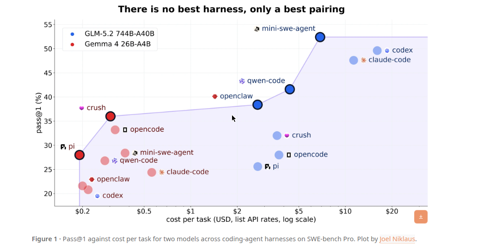
文里几个词有固定含义。policy是被训练的模型：把prompt变成completion的权重，调用之间没有loop也没有记忆，也直接叫模型。agent是跑在harness里的policy，是规划、调工具、决定何时停的完整程序。sandbox是动作真正执行的隔离地，比如容器、虚拟机或tmux会话。benchmark是固定任务集加比较协议。
harness拥有自己的loop、context、工具面和sandbox，只有一根线伸出来连向模型endpoint，训练者能看到的只有这根线。模型选工具和参数，harness执行调用，把结果加回模型的context，再问它下一步做什么。
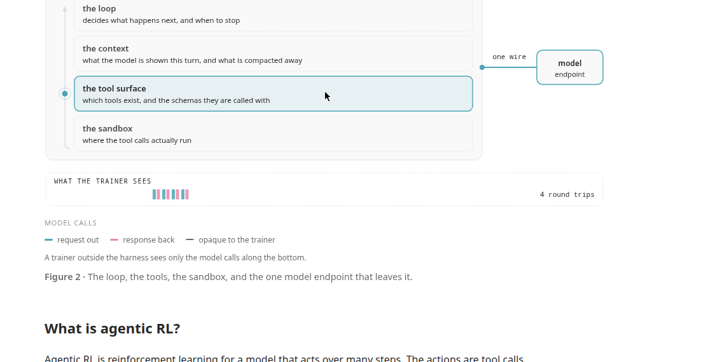
白盒RL环境里，训练者拥有loop：训练者采样动作、调env.step、读observation、再采样，环境等着被调，policy产生的每个token本来就在训练者手里，TRL的GRPOTrainer接环境工厂时指望的就是这个。黑盒环境里，harness拥有loop：它在sandbox里启动，跑自己的loop、调自己的工具、压缩自己的context，自己决定何时停，它是从没为训练写过的agent程序，训练者在盒子外面，只能看到到达模型endpoint的一串调用。Microsoft的Agent Lightning团队给这两种模式起了名：传统agentic RL里训练引擎拥有环境交互loop，harnessed agentic RL里harness拥有loop，训练引擎只观察LLM请求响应对。
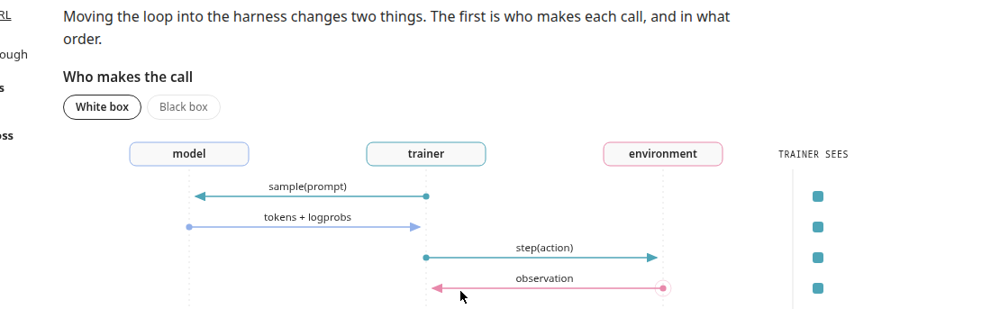
loop搬进harness改变两件事：谁发起每次调用、按什么顺序；训练者最后记下了什么。同一条rollout，白盒记录保留每个事件，黑盒记录只保留模型turn，工具调用和压缩过程丢了，工具结果只以回显文本的形式出现在下一个prompt里，harness修好重发的一次畸形调用，黑盒记录里根本看不到。
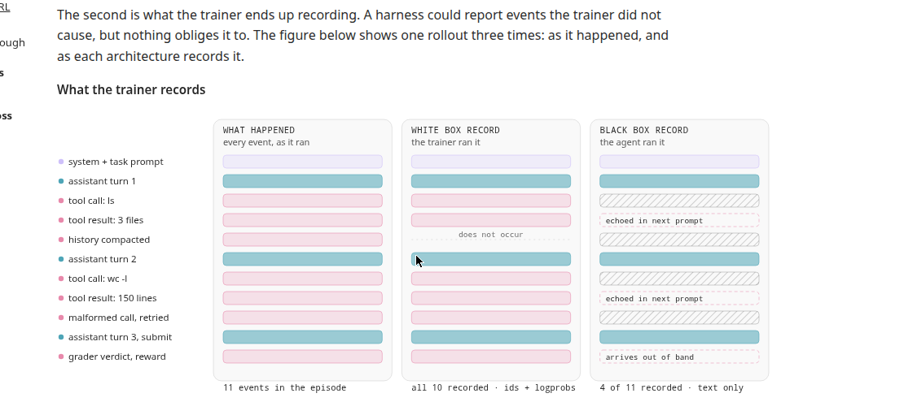
on-policy策略梯度每个token需要两样东西：采样的是哪个token，以及采样时用的概率。只交回文本和分数的harness，两样都不给。不同的token序列能产出相同的文本，只存文本再重新tokenize，得到的token id可能和模型采样的不一样。TRL的文章写得直接：在RL里，你优化的是模型实际产生的那些token。harness拼下一个prompt时可能加role标记、改工具调用里的空白，有些harness还会修畸形JSON，训练者拿这份被编辑过的文本去学，更新的可能是模型从没生成过的回答。
概率也得在生成时记。异步RL里，rollout采样之后模型可能已经更新过，用当前权重重算logprob，恢复不了采样时的概率。重要性采样比较当前概率和生成时概率，两边都用当前值，比值恒为1，策略明明变了也看不出来。所以采样器必须返回token id和逐token logprob，训练者必须留着它们：绝不重编码解码过的文本，采样到的id留着，模板后缀用id拼接追加。这要求在模型endpoint处拦截，而不是在文本边界。
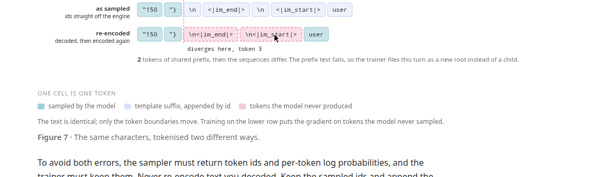
模型卡片已经开始标注分数出自哪个harness：GLM-4.7承诺在Claude Code、Kilo Code、Cline、Roo Code等主流agent框架里有提升，Kimi K2的Terminal-Bench报了两次，Terminus下25.0，自家框架下30.0，DeepSeek-V3.2的thinking模式在Terminus下根本跑不起来，Terminal-Bench分数只能换harness出。harness甚至能改变谁排第一：Zhang等2026年拿三个公开榜上分差3分以内的模型，在100道SWE-bench Verified题上跑三种harness配置，其他全固定。Minimal是冗长工具、无压缩、无重试，Improved精简工具加压缩重试，Full再加自检、漂移检查和回滚。GLM-5.1三档是55.0、59.0、65.5，GPT-5.4是52.5、58.5、63.5，Kimi K2.6是52.0、56.5、60.5，每个模型在不同的harness配置下拿第一。换harness让GLM-5.1动了13分，同harness换模型只动2.5到5分。
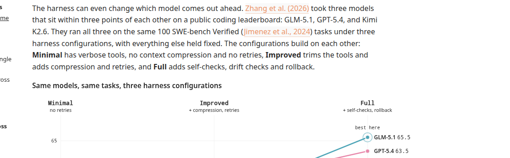
Orchard论文测了跨harness迁移：拿在单harness或双harness训过的两个开放coding模型，加上谁都没训过的Kimi-CLI，一共三个harness、两套题。单harness训的系统，在见过的harness上小跌，在没见过的上崩：OpenSWE-32B从OpenHands搬到Mini-SWE-Agent掉7.5分，到Kimi-CLI掉58.8分，SWE-bench Verified只剩3.6%，Terminal-Bench 2.0直接零分，Scale-SWE在老家之外连合法工具调用都发不出来。论文把这两种死法叫退化性解决率下降和灾难性格式失败。
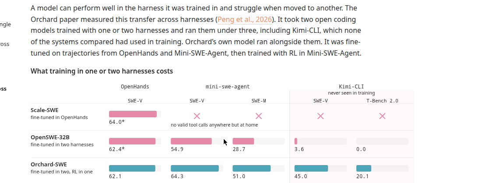
KwaiKAT的解法叫harness scaling：训练时换harness。Poolside的Laguna报告往监督训练里加了13亿token来自OpenHands、OpenCode、Mini-SWE-Agent的轨迹，故意保留每个harness自己的习惯，RL只在自家生产harness里跑。Kimi K3的RL环境用可组合模块搭出Claude Code、Codex等harness，模型训在多种harness配置上而不是一种。Qwen3-Coder-Next在六个不同harness里生成agentic coding数据，MiMo-V2.6训在任务适配的mini-harness池上，Liquid AI给LFM2.5-2.6B每个训练任务随机挑harness，理由是直接在各家harness里训，让模型接触它们的工具、系统提示和交互模式。
OpenForgeRL验证过多harness会不会伤峰值：同一模型训单harness和训三harness，三harness的在单harness老家还更高，48.5对46.0，在Codex下接近两倍。各harness说的模型API方言也不同：OpenAI chat-completions、OpenAI Responses、Anthropic Messages、Google Gemini，有的用tool calling，有的纯文本。harness说哪种方言，决定了捕获代理能不能无改动地坐在它前面。
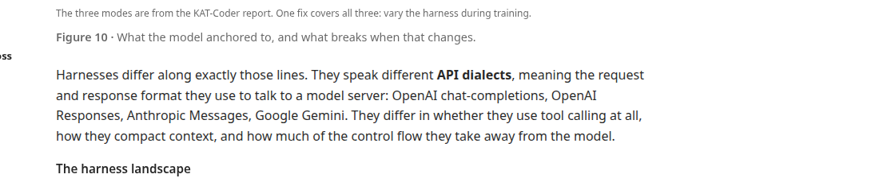
KwaiKAT团队点了病因：如果agentic RL只依赖单个固定harness，模型学到的往往不是怎么做任务，而是怎么做这个特定harness接口约定下的任务。他们分成三种过拟合：对动作格式的，训在tool calling harness里，输出是tool_calls加JSON，丢进aider那种用自然语言写编辑块的，JSON当聊天文本发出去，什么都没解析；对context结构的，训时每个工具结果一条独立消息，丢进会压缩历史的harness，自己早前的结果不在预期的位置，就把做过的工作重做一遍；对控制流的，训时harness替它重试，丢进只报错不重试的harness，它把同一条失败命令再跑一遍，因为何时停下来从来不是它的活。
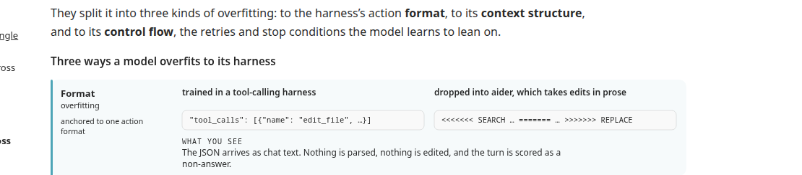
实践中失败经常表现为报错而不是低分：模型按老harness的拼写调工具名、传参数名，新harness拼写不同，调用在工具运行前就被拒。一个真实例子：训它的harness工具名是首字母大写的Bash、Read、Write、Edit，Write收file_path和content；没见过的harness全小写，write收filePath和content，AI_NoSuchToolError，任务、推理、答案全对，调用死在拼写上。Harbor 0.22.0已经带了40多个harness的适配器，harness只会越来越多。
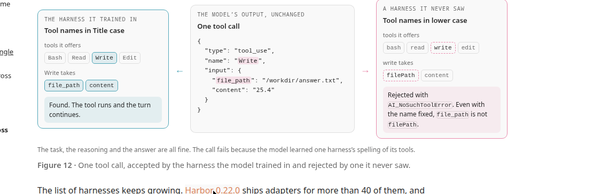
框架三件套：OpenEnv是harness、环境、训练者都接的接口，捕获代理负责记token；Harbor给任务和沙箱；TRL拿代理记下的东西训练。harness找到代理的方式和找任何模型服务商一样：base URL加API key，API key是给这次rollout铸的捕获session id，一台代理一个端口服务所有并发rollout，拿没注册过的key来调，直接401。代理从请求路径、头、body形状判断四种方言，用从NVIDIA Polar网关借来的转换器统一转成chat completions，再按调用者自己的格式把回答包回去。
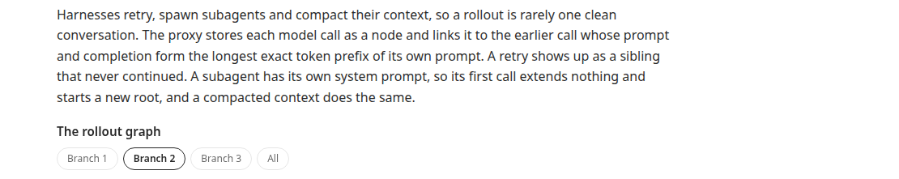
每个调用，代理向推理引擎要prompt的token id、采样的token id和每个采样token的logprob，并且要求全分布采样，不做top_p、top_k截断。截断会让采样偏离策略本来的样子，是RL里熵崩的一条已知路径，而且vLLM的processed logprob在截断后算，和策略对不上。实测把top_p调到1.0，重要性比率从0.985到0.993升到0.9984到0.9999。vLLM需要两个启动flag，SGLang也行。代理不轻信引擎：第一次见某个引擎先发探针打分，区分logprob是raw还是processed，token级别以下的引擎只给eval，不给训。
vllm serve <model> --return-tokens-as-token-ids --logprobs-mode processed_logprobs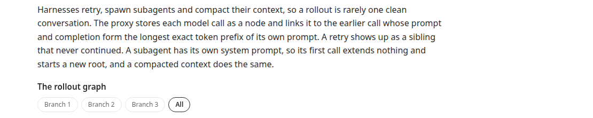
python -m openenv.core.harness.capture.server --llm-url http://127.0.0.1:8000 --model <model>捕获自己的harness三步：起代理，用POST /sessions铸session id，把agent的base URL指向代理、API key填session id，从GET /sessions/{id}/rollout读回rollout。代理默认绑localhost，对外暴露要配admin key，管着铸session和读session的路由。代理是单进程，实测200个并发session时健康检查开始饿死，320个时进程崩掉；rollout撞到模型调用预算也是代理自己拦下，那次最终回复不进训练数据。
harness会重试、起子智能体、压缩context，一条rollout很少是一段干净的对话。代理把每次模型调用存成节点，连到prompt加completion与自己prompt有最长精确token前缀的那个早调用。重试显示为没走下去的兄弟，子智能体有自己的系统提示，它的第一次调用谁的前缀都不是，开新根，压缩过的context也一样。每条根到叶的路径变成一条训练序列，context token的loss mask记0，采样token记1，logprob缺失或没对齐的turn只当context留着，绝不当target。这些检查在每次调用到达时就跑，因为错位的turn在代理还记得它是谁时最好诊断。
一条rollout交回来长什么样：每个turn的prompt是它之前的一切，所以token轴上的条越来越长，条尖上实色的一小段是模型采样的token。示例rollout里10,002个token中采样了1,108个，可训的占11%。turn之间条尖和下一条条首的台阶，就是中间append进去的工具结果。
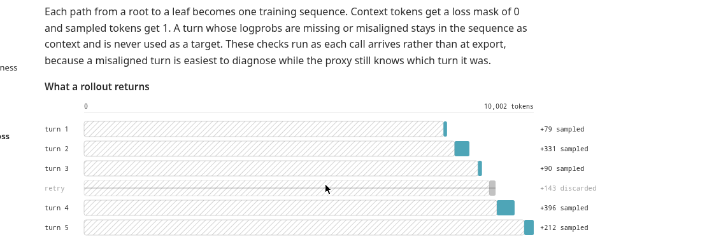
Harbor来自Terminal-Bench团队，把任务、harness、沙箱三者解耦：0.22.0带40多个agent harness适配器、26种执行后端，从本地Docker到Daytona、Modal、E2B，约80个任务数据集用它的格式。任何harness可以跑任何任务、任何后端，一次运行就是一条命令，指明数据集、agent、后端。任务是一个目录：指令、环境、测试脚本。文里用的SmolDataEnvs是数据分析任务集，题出自Kaggle notebook，带自动打分器，奖励的通路是agent写/workdir/answer.txt，test.sh读，grader.py吐一个float，进/logs/verifier/reward.txt，Harbor连trial一起返回。
四个命令管一切：openenv harbor info只报告不启动，看引擎给不给token id、哪些沙箱后端凭证可用、数据集里多少任务、哪些harness验证过；rollout不经环境服务器直接跑rollout，在这里能跑、serve下失败，错就在服务层；serve起环境服务器，任务API、MCP上的run_rollout工具、Web UI、捕获代理全在；push把同一套推到Hugging Face Space。serve到rollout返回分六步：探引擎、查沙箱、起代理并发布、铸session、Harbor跑trial、校验返回，harness和沙箱是每次rollout的参数，不是部署时的设置。
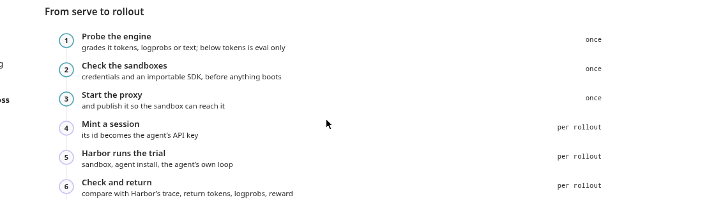
openenv harbor info --llm-url $LLM --dataset org/train,org/eval
openenv harbor rollout --llm-url $LLM --dataset org/train --task-index 0 -n 5 --harness opencode --sandbox e2b
openenv harbor serve --dataset org/train,org/eval
openenv harbor push --llm-url $LLM --dataset org/train,org/eval --repo-id you/harbor-envrollout要求必传--llm-url且没有默认值，因为陈旧的endpoint产出的rollout看着正常却没有token id。serve可以不带llm启动，因为每次rollout指名自己的引擎，一套部署同时服务训练和评估。-n 5是从task-index 0开始跑0到4号任务各一次，不是同一个任务采五次。单机上serve占两个端口，训练器加Web UI一个，捕获代理一个，沙箱一般在别处，代理经隧道连过去，默认走--expose加Gradio。跑在Hugging Face Space上只有一个端口，代理挂到/capture路径，Space得是公开的，因为沙箱里的agent发不出私有Space要的鉴权头，安全靠代理只认注册过的session id，铸id要admin key。训练前把max_concurrent_envs调大，默认4小于GRPO每组8个rollout，超了serve回CAPACITY_REJECTED。
训练对象是Liquid AI的LFM2.5-2.6B，按发布信息，它之前训过的harness不在文里的四个之列。任务是1000道SmolDataEnvs训练题，400中档600难，固定顺序两边跑都一样；测试是250道held-out题，notebook、问题、指令和训练零重叠。跑两轮：一轮只在OpenCode里训，一轮跨OpenCode、Claude Code、Codex、Mini-SWE-Agent四个harness，每组8个rollout的GRPO用同一个harness，advantage比较的是动作不是harness。配方是TRL里的异步GRPO，1000步，一块H100训练、一块H100用vLLM服务策略产rollout，rollout来自通常落后两步、最多四步的权重。硬件是Hugging Face集群两块H100加每次rollout一个E2B沙箱，单harness跑了32小时，多harness46小时。
基线先验出问题：同一套权重，Mini-SWE-Agent下62.1%，Claude Code下只有33.2%，OpenCode33.6%，Codex40.0%，总体42.2%。评估很密：每100步，250道测试题在每个harness下各跑一次，一共1000个格子，第一发判对才算解出。Qwen3.5-2B的早期轮次在折叠章节里，它们塑造了LFM的配方。
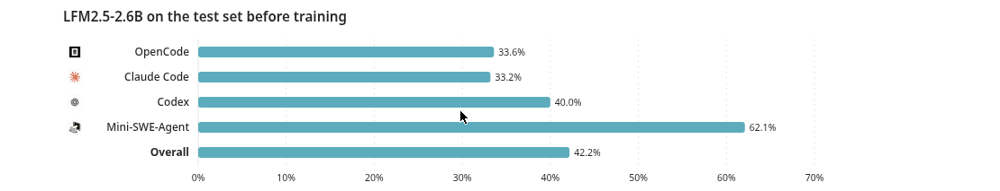
python -m pip install 'trl @ git+https://github.com/huggingface/trl.git@main'from functools import partial
from harbor_env.harness import HarborSessionFactory
from trl.experimental.async_grpo.openenv_harness import HarnessRolloutWorker
def make_rollout_worker(dataset, tokenizer, server_url, vllm_url, model):
factory = partial(
HarborSessionFactory,
server_url=server_url,
split="FineEnvs/SmolDataEnvs-harbor-train",
llm_url=vllm_url,
model=model,
harness="opencode",
sandbox="daytona",
reward_key="correctness,reward",
)
return HarnessRolloutWorker(
harness_session_factory=factory,
harness_adapter=None,
rollout_reward_fn=lambda outcome: outcome.env_reward,
model_name=model,
dataset=dataset,
processing_class=tokenizer,
reward_funcs=[],
num_generations=8,
max_inflight_tasks=8,
vllm_server_url=vllm_url,
max_tokens=4096,
temperature=1.0,
top_p=1.0,
top_k=-1,
chat_template_kwargs={"enable_thinking": False},
)TRL侧用OpenEnv的HarborSessionFactory产出HarnessRolloutWorker要的session形状，worker在TRL #6947合并，位于trl.experimental，2026年10月1日时只在main上没进release，装main版。每个session要一次rollout、等它回来，经fetch_training_trace拿带token id、behavior logprob、loss mask的TrainingTrace，TRL直接吃。harness_adapter=None让harness跑自己的loop，每组8个rollout同harness，采样温度和训练者重算logprob用的保持一致。
LFM奖两样：正确性，对1错0；工具效率，对的答案调用越少给一点bonus，最多0.1，公式是1加1.5除以15加调用数，错的答案再少调用也是0，模型不能靠提前放弃刷分。bonus来自Qwen轮次的教训：只奖正确性，模型没有理由在拿到答案后停手，早期一轮工具调用从13 creep到41。bonus虽小，GRPO从组内差异里学，八个rollout全对时正确性一项大家都是1，组内教不出东西，bonus是唯一能区分它们的信号，推短解、压长解。
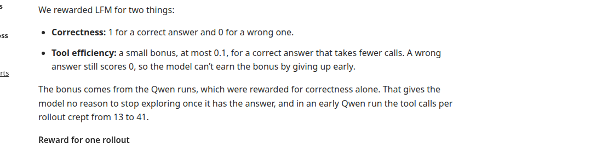
一组真实例子：八个rollout全对，调用数4、4、5、6、8、9、9、10。只看正确性，八个reward都是1，advantage全0，这组白跑。加上bonus，4调用的两个reward 1.079、advantage正1.33，10调用的reward 1.060、advantage负1.29。两轮里分别有17.5%和22.6%的组是全对但调用数不同，效率bonus是它们唯一的reward对比。奖励审计没发现公式错配，错答案没拿过bonus。
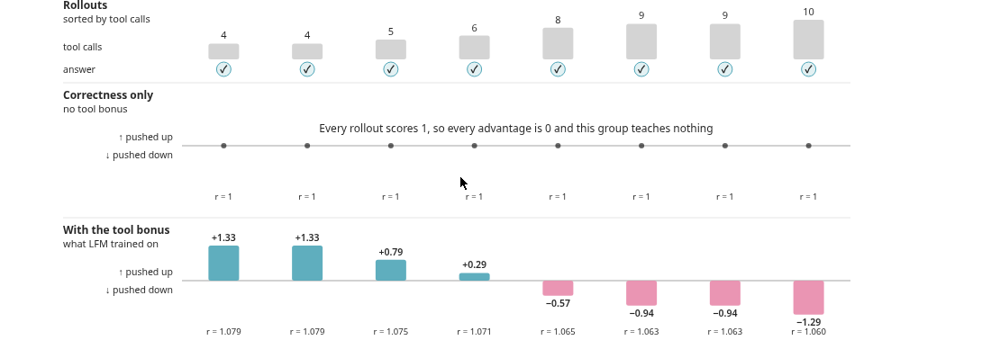
两轮的正确rollout占比都在最初几百步爬升，之后随任务段难度起伏，任务顺序两边一样所以起伏同步，工具调用一路下降。测试集上，单OpenCode模型在OpenCode下更好，58%对50%，多harness模型在Claude Code下49%对42%、Codex下54%对43%更好，Mini-SWE-Agent下打平。训练时多harness轮的调用数看着更高，是因为它的平均里掺了Claude Code、Codex、Mini-SWE-Agent的rollout，这些harness训前调用就比OpenCode多；测试集上四个harness全跑，多harness模型在每个harness下调用都更少。
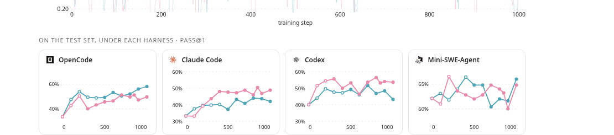
精度上两轮都涨，单harness涨10个点到52.3%，多harness涨12个点到54.2%，大部分涨幅在前200步，两轮之间1.9分的差距在噪声里，总体精度分不出胜负。
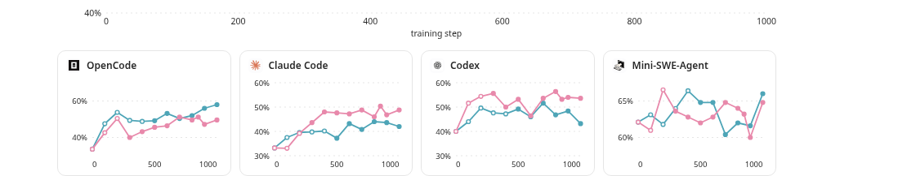
分harness看最清楚：单OpenCode模型的增益几乎全在OpenCode，34%到58%，多harness模型四个harness全涨。两轮看到的数据量并不一样：单harness轮555个不重复任务、1250万监督token、训练处理1.62亿token，多harness轮626个任务、1870万监督token、4.51亿token，Claude Code会重写历史，一条rollout变成约八个训练行，每个都带一份context拷贝。单种子加不等量曝光，两轮的比较是观察性的。
两个模型解出的题都更多、调用都更少，多harness模型砍得更多：在它和基线都解出的题上少31%工具调用，单OpenCode轮是11%。调用少了，每次调用重发的历史也少，输入token跟着掉。省得最多的是Codex下，多harness模型调用数接近腰斩。唯一的例外是单OpenCode模型在没训过的Claude Code下，调用和token比基线还多，单harness学的省调用只部分迁移，主要迁到了Codex。
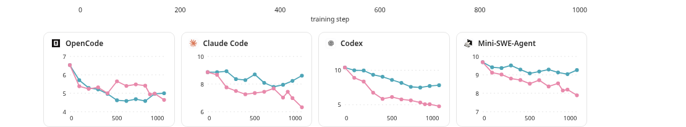
逐检查点、逐harness的节省热力图里，多harness模型到第1000步，四个harness、三个指标全蓝；单OpenCode模型在OpenCode稳省、Codex越省越多，在Claude Code下几乎每个检查点生成的token都比基线多，最多时多62%。
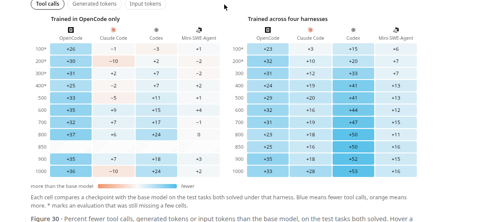
RL不是唯一的学法。捕获下来的精确token也能整条轨迹拿去做SFT：拿Qwen3.8-27B当老师，在四个harness里跑SmolDataEnvs训练题，每题每harness最多试三次，留验证器判对的第一条，得3189条成功rollout，来自888道题。每个assistant turn变成一个训练样本，loss只下在下一个assistant回答上，用LFM自己的chat模板tokenize，不用老师的。训两个SFT：OpenCode SFT用801条OpenCode rollout，多harness SFT用全部3189条，四个harness混洗不做平衡，全量微调两轮，学习率3e-6。数据公开为SmolDataEnvs-multiharness-sft。
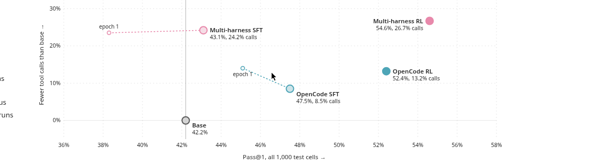
结果上RL压过两个SFT：多harness RL到54.6%，OpenCode SFT 47.5%，多harness SFT 43.1%，比同四harness的RL低11.5个点。OpenCode SFT像小一号的OpenCode RL，增益几乎全在OpenCode，33.6%到51.6%，Claude Code下原地踏步，Mini-SWE-Agent下还掉了点。多harness SFT把增益摊开，但在Mini-SWE-Agent从62.1%跌到45.2%，把别的harness涨的全抵消，总体43.1%和基线42.2%在噪声里，第一轮后甚至只有38.3%。有意思的是SFT没奖效率也省了调用：多harness SFT在共同解出的题上少24.2%调用。但作者也打了预防针：两组SFT差的不只是harness混合，监督token差七倍，SFT和RL差目标、差数据源、差算力，各只跑一次，这是观察不是排名。
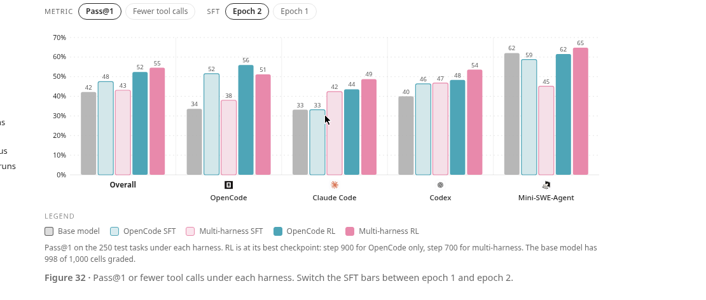
复现有料：SmolDataEnvs多harness RL合集把下面全收拢，训好的模型有LFM多harness RL和OpenCode-only RL的第1000步加最好检查点分支、两个SFT的epoch 2、Qwen的最好检查点，训练对比dashboard里有每条曲线和每个检查点的评估，Harbor环境和独立OpenCode环境服务器，SFT数据按harness分好、给LFM2.5-2.6B和Qwen3.5-2B预tokenize好带训练脚本。合并进主线的有OpenEnv的捕获代理和Harbor集成、typed TrainingTrace API、TRL的HarnessRolloutWorker，TRL在2026年10月1日时worker只在main上，装main版。团队说更大的模型已经在跑，结果会更新到这页。
结论收三条：多harness RL在小模型实验里同时改进了任务表现和工具使用，LFM2.5-2.6B在SmolDataEnvs上42.2%到54.2%，四个harness全涨，单OpenCode训练也涨但效率增益没摊开；工具效率奖励把怎么做任务也写进训练目标，最终检查点多harness模型在共同解出的held-out题上少31%工具调用，正确性仍是前提，错答案拿不到bonus；OpenEnv捕获代理让这事不用重写harness、不用给每个harness另起训练loop就能做，Harbor给任务和沙箱，TRL从trace里学。局限也写明了：一个任务家族、小模型、每种设置单种子、数据和算力曝光不等，支持的是相对基线的增益，给不出harness混合的通用排名，LFM没跑过无bonus版，bonus的贡献分不出来。
参考：https://huggingface.co/spaces/FineEnvs/multi-harness-rl